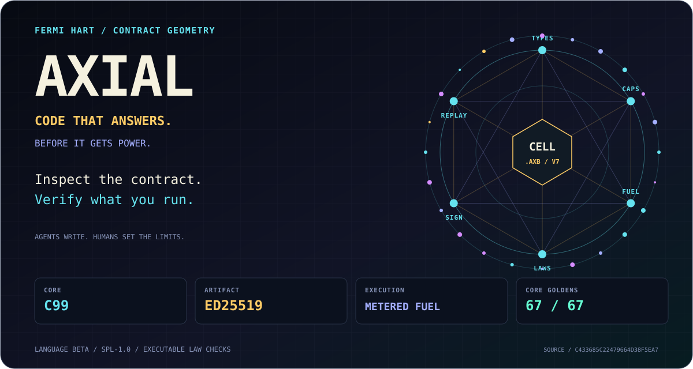
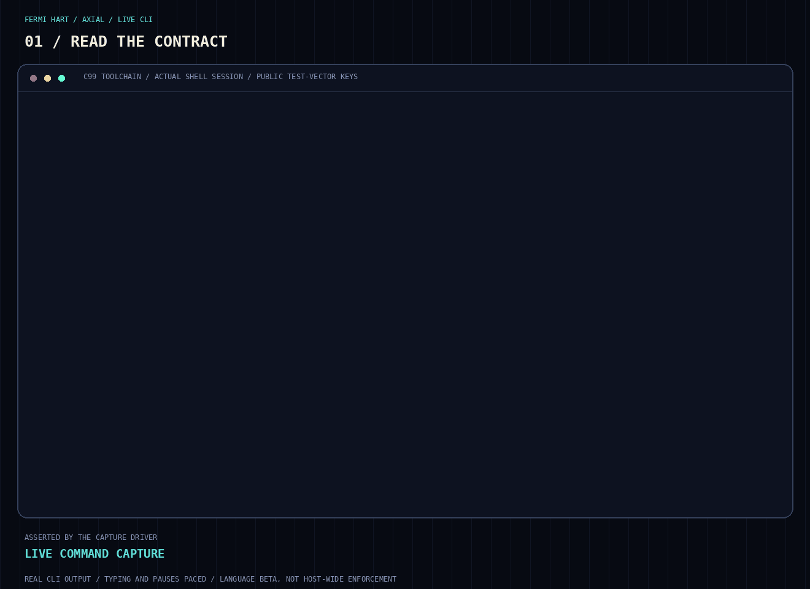
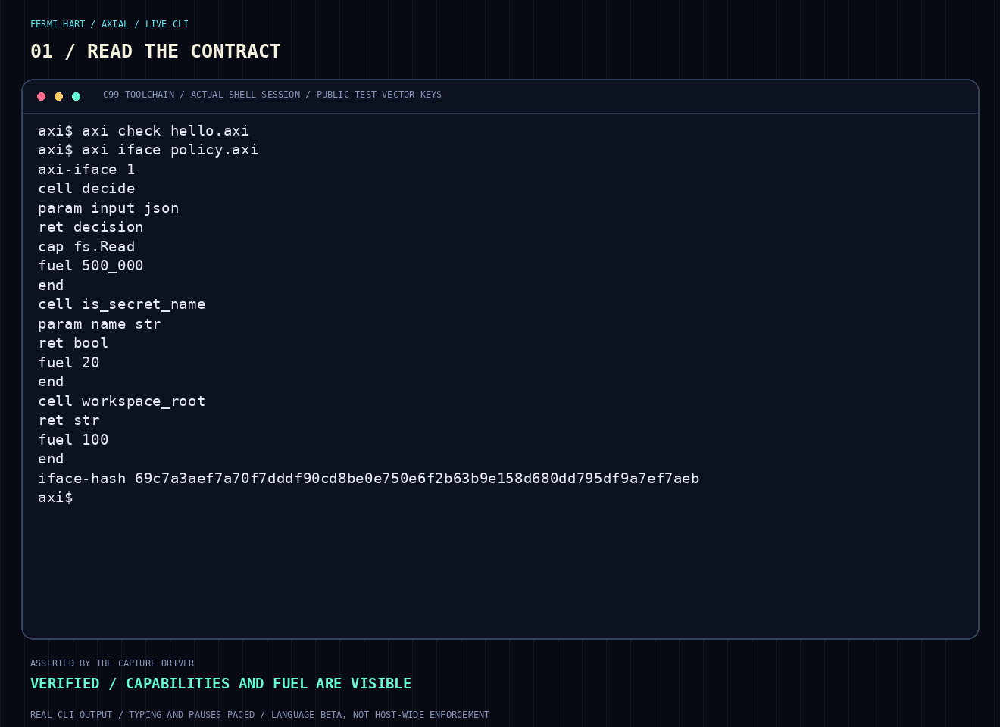
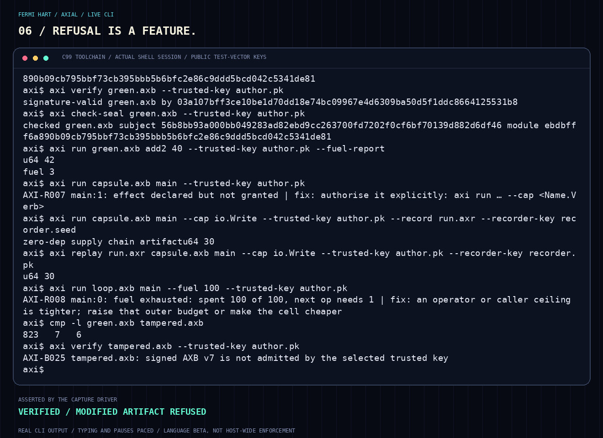
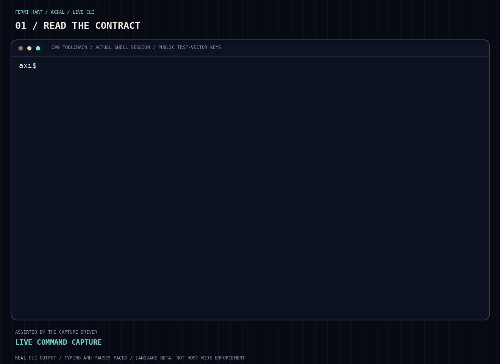

Read the terms.
Types, capability requirements and fuel are derived into an inspectable interface. The body is no substitute for a clear contract.
A LANGUAGE FOR THE AGE OF AGENTS
Writing the function is getting easier.
Knowing what it can do should not get harder.
Axial puts the questions where you can inspect them: what effects are declared, what the operator grants, how much VM work is allowed, who signed the bytes, and which executable laws passed.
Agents write. Humans set the limits. Axial checks the contract.

THE ARTIFACT IS THE ARGUMENT
A false law. A passing law. An explicit grant. A bound replay. A loop that runs out of fuel. One changed bit. These are real commands, not imagined product states.

Types, capability requirements and fuel are derived into an inspectable interface. The body is no substitute for a clear contract.
verify checks the selected producer signature. check-seal re-executes checked laws. Authorship is not the same as checked behavior.
A declared effect still needs an operator grant. Fuel meters VM work. A recorder has its own trust identity, distinct from the producer.
SMALL ENOUGH TO INSPECT
cell hello : fn(a: u64, b: u64) -> u64
fuel 10_000
pure
{
let n = a + b
ret n
}A real source example. This is examples/hello.axi, not syntax invented for a landing page.
An explicit budget. Instruction fuel gives VM work a deterministic price. A budget is part of the interface, not a comment hoping someone will read it.
A useful distinction. The interface helps focus review. It does not establish correctness for every input or certify the embedding host.

ONE MODULE. EXPLICIT TRUST.
Bytecode, interface metadata, a producer signature and—when sealed—a checked-law certificate travel in one .axb. Trust anchors remain outside the module. Replay evidence is a separate signed episode.
seal runs the law_* cells. False, trapped or absent laws prevent publication of a new checked artifact. These are stated executable cases, not formal mathematical proofs of all behavior.
It authenticates bytes under the operator's selected key. It does not prove the signer is benevolent, that the policy is wise, or that the host will honor a decision.

PUT A DECISION AT THE BOUNDARY
The real C embedding demo evaluates a sample policy and reports its decision and fuel. It keeps the unknown-command default visible, too. No cherry-picked verdicts.

sed command selects the real verdict section; it does not rewrite results. rm/export are evaluated requests, not host commands being executed or intercepted. This sample is not a hardened filesystem policy.This demonstration uses the internal compatibility API. The declared public v1 embedding profile is pure/CAP-free, with a four-function C surface. An embedding host must enforce the returned decision. Read the declared scope ↗
NO CLOUD ACCOUNT. NO PACKAGE REGISTRY.
A C99 compiler, the standard host libraries and vendored cryptography build the product. POSIX tools run the original golden gate and demos. Source-identity and full audit gates also require Python 3.
git clone https://github.com/fermihart/axial.git
cd axial
make dev
./build/axi check examples/hello.axi
./build/axi iface examples/policy.axi
make gate-fast
make demo && sh scripts/jash_policy_demo.sh
sh scripts/demo-supply-chain.shmake gate-fast runs the 67 original host goldens. The full make gate additionally exercises compiler, numeric, runtime, local-authority, worker and ABI/identity audit checks. Its authority fixtures require real UID transitions; unavailable tests fail rather than becoming skipped passes. Read the host requirements before selecting an explicit privileged runner. This page does not claim that the media capture ran the full audit.
The 80-wave audit and migration notes remain authoritative. Old CHECKED seals require re-execution and resealing under the corrected checker identity; CLI input/quota limits are documented there. The media helper separately asserts the seal, grant, fuel, tamper and replay cases shown here.
Install the normal build tools plus Python 3, Pillow, pyte, Bash, Fontconfig and DejaVu Sans Mono. The helper reruns the host gate and captures the real CLI with private test workspaces.
python3 tools/presentation.py
python3 tools/presentation.py --checkOnly curated media are published. Raw transcripts, test keys, modules and episodes stay local. Source fingerprints and shared-capture checks reject stale or mixed media. Regeneration reproduces behavior, not necessarily identical animation timing or bytes.
THE BOUNDARY IS PART OF THE PRODUCT
This is the language/toolchain beta. It contains the grammar, checker, compiler, bytecode, VM, fuel, effects, signing, sealing, replay and embedding implementations. It does not establish boot-rooted attestation, universal host mutation mediation, confidential receipts, an externally certified trusted runner or production readiness.
VM fuel is not a universal wall-clock or host-process limit. Checked laws are executable validation, not a proof of arbitrary program correctness. Signatures need an operator's trust anchor. Keep the declared embedding profile in view.
Let agents move fast.
Keep authority deliberate.